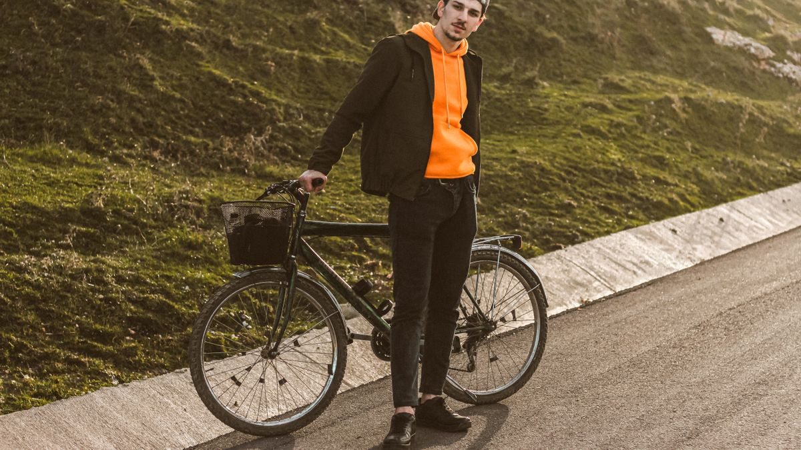

왜 빨리 먹을까
이전 다견 경쟁, 한 번에 많은 양, 산책 직후 과흥분 등 환경 요인이 80%입니다. 갑자기 슬로우 피더만 도입하면 오히려 스트레스가 늘 수 있습니다.

생활 속 조정
- 1일 분량→2~3회 분할
- 다견: 식기 50cm+5분 시간차
- 산책 후 20분 휴식 뒤 급여
- 슬로우 피더는 1주만 시험 후 판단
급여 전 10초 '앉아' 대기는 식사 흥분을 낮추는 데 도움이 될 수 있습니다. 같은 양을 2회로 나눌 때는 두 번째 그릇을 3~4시간 뒤에 주면 하루 리듬이 유지됩니다.
관찰
식사 시간(초), 구토, 배변을 14일 메모. 조정은 한 번에 1가지만—분할과 슬로우 피더를 동시에 바꾸지 않습니다.

식사 시간은 스마트폰 타이머로 재면 14일 평균을 알기 쉽습니다. 구토가 있었다면 그날의 산책·놀이·급여 순서도 함께 적어 원인 추적에 도움이 됩니다.
멈춰야 할 때
14일 조정 후에도 하루 2회 이상 구토, 식사 거부 48시간—생활 습관만으로 설명되지 않을 수 있습니다.

식사 거부와 체중 감소가 동반되면 생활 습관 조정을 멈추고 검진을 검토하세요. 빠르게 먹는 습관만의 문제가 아닐 수 있습니다.
실전 적용 노트
느린 급여는 '도구 구매'보다 '한 번에 주는 양·그릇 높이·급여 횟수' 조정부터 시작하세요. 구토·복식이 잦으면 1회량을 20% 줄여 보는 것만으로도 변화가 있습니다.
슬로우 피더·퍼즐 그릇은 처음엔 5분 안에 끝낼 수 있는 난이도로 시작합니다. 너무 어려우면 그릇을 거부합니다.
급여 전 2분 '기다려' 훈련을 넣으면 흥분 식사가 줄어드는 집이 있습니다.
여러 마리 가정은 반드시 그릇을 분리하세요. 한 그릇에 모이면 속도 경쟁이 납니다.
습식+건식을 섞으면 씹는 시간이 늘어나는 경우가 많습니다.
식사 후 30분 운동은 피하고, 가벼운 산책은 1시간 후가 안전한 경우가 많습니다.
체중 증가와 함께 급속 식사가 늘면 칼로리·급여량 기록을 함께 보세요.
도구를 바꿀 때는 3일간 구토·변 상태를 메모하세요.
목표는 '30분 걸리게'가 아니라 '삼키기 전에 10번 씹게'에 가깝습니다.
이번 주 느린 급여 체크리스트입니다. 도구보다 1회량·횟수 조정이 먼저입니다.
- 구토·복식 시 1회 급여량을 20% 줄여 봤습니다.
- 슬로우 피더는 5분 안에 끝나는 난이도로 시작했습니다.
- 급여 전 2분 '기다려'를 시도했습니다.
- 여러 마리는 그릇을 반드시 분리했습니다.
- 식사 후 30분 격한 운동은 피했습니다.
- 도구 변경 후 3일간 변·구토를 메모했습니다.
- 습식+건식 혼합으로 씹는 시간을 늘렸습니다.
- 체중 증가 시 칼로리 기록을 함께 봤습니다.
느린 급여의 목표는 30분 식사가 아니라, 삼키기 전에 씹는 습관을 만드는 것입니다.
느린 급여는 도구보다 1회량·횟수 조정이 먼저입니다. 구토·복식 시 20% 줄이기, 슬로우 피더는 5분 난이도부터, 여러 마리는 그릇 분리가 필수입니다. 식사 후 30분 격한 운동은 피하고, 도구 변경 후 3일간 변·구토를 메모하세요. 목표는 30분 식사가 아니라 삼키기 전에 씹는 습관입니다.
1회 급여량을 20% 줄인 뒤 3일만 관찰해 보세요. 구토가 줄면 그 양이 현실적인 기준일 수 있습니다.
마무리로, 이번 주에는 체크리스트 3개만 골라 2주 반복해 보세요. 작은 성공이 쌓이면 나머지는 자연스럽게 늘어납니다.
기록이 쌓이면 병원·상담 때 설명이 쉬워집니다. 한 줄 메모라도 같은 항목으로 이어 쓰는 것이 핵심입니다.
완벽한 루틴보다 80% 지켜지는 루틴이 오래 갑니다. 안 된 날은 원인 한 줄만 적고 다음 주에 조정하세요.
오늘 당장 하나만 고른다면, 체크리스트 맨 위 항목부터 시작해 보세요. 나머지는 다음 주로 미뤄도 괜찮습니다.
가족이 함께 돌본다면, 누가 했는지 체크박스 한 칸만 추가해도 누락·중복이 줄어듭니다.
검색으로 답을 찾기 전에 7일 메모를 먼저 정리해 보세요. 증상 설명이 훨씬 빨라지는 경우가 많습니다.
새 용품·새 사료·새 루틴은 동시에 바꾸지 않습니다. 한 가지만 바꾸고 5일 관찰하는 편이 안전합니다.
이번 달 목표는 '매일 완벽'이 아니라 '이번 주 3회 성공'입니다. 0회에서 1회로 바뀌는 것만으로도 충분한 진전입니다.
스트레스 신호(회피·짖음·숨 가쁨)가 보이면 시간을 반으로 줄이세요. 짧게 자주 성공하는 쪽이 학습에 유리합니다.
계절·이사·손님처럼 환경이 바뀌는 주에는 루틴을 단순화하세요. 필수 3개만 지키고 나머지는 다음 주로 미뤄도 됩니다.
사진 한 장이 긴 설명보다 나을 때가 있습니다. 같은 조명·각도로 남기면 변화 비교가 쉬워집니다.
병원 방문 전에는 '언제부터·얼마나 자주·무엇이 함께 변했는지' 3가지만 정리해도 상담이 수월해집니다.
루틴이 무너진 날을 실패로 보지 말고, 겹친 일정(야근·손님·이사)을 한 줄로 적어 두세요. 다음 주 조정 근거가 됩니다.
정리하며
슬로우 피더 3종 샀는데 그릇만 바뀐 집이 있습니다.
저는 빠르게 먹는 문제를 '그릇 문제'로만 보지 않습니다. 누가 옆에 있었는지가 먼저입니다.
급식 그릇 하나만 느린 그릇으로 바꿔 3일 관찰해 보세요. 한 번에 전부 바꿀 필요 없습니다.
초보자가 자주 실수하는 포인트
- 분할+슬로우 피더+시간차 동시 적용
- 식기 10cm 옆에 배치
- 구토 반복해도 그릇만 교체
- 산책 직후 급여
- 14일 관찰 없이 포기
체크리스트
- 급여 2~3회 분할
- 식기 50cm 간격
- 급여 전 10초 대기
- 슬로우 피더 1주 시험
- 14일 식사·구토 메모
자주 묻는 질문
- 슬로우 피더는 언제 도입하나요?
- 분할 급여·식기 간격·급여 전 대기를 1~2주 시도한 뒤, 여전히 2분 이내에 끝나면 1주 시험하세요.
- 고양이도 같은 방법을 쓸 수 있나요?
- 다묘 가정은 식기 분리·시간차가 먼저입니다. 고양이는 슬로우 피더 거부가 잦아 작은 변경부터 시도하세요.
- 빨리 먹어도 괜찮지 않나요?
- 가끔은 문제없지만, 구토·복부 팽만이 반복되면 조정이 필요합니다. 14일 메모로 패턴을 확인하세요.
이 글은 초보자 기준으로 이해하기 쉽게 정리되었으며, 내용은 운영 과정에서 순차적으로 보완될 수 있습니다. 수의사 등 전문가의 진단·처치를 대체하지 않습니다.